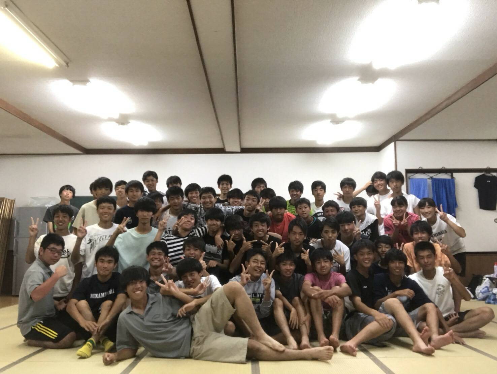

<!DOCTYPE html>
<html lang="ja">
  <meta charset="utf-8">
  <meta name="viewport" content="width=device-width, initial-scale=1">
  <title>HOME | YUTA★WEB</title>
  <link href="https://fonts.googleapis.com/icon?family=Material+Icons" rel="stylesheet">
  <link rel="preconnect" href="https://fonts.googleapis.com">
  <link rel="preconnect" href="https://fonts.gstatic.com" crossorigin>
  <link href="https://fonts.googleapis.com/css2?family=Teko:wght@700&display=swap" rel="stylesheet">
  <link rel="preconnect" href="https://fonts.googleapis.com">
  <link rel="preconnect" href="https://fonts.gstatic.com" crossorigin>
  <link href="https://fonts.googleapis.com/css2?family=Abril+Fatface&family=Josefin+Sans:ital,wght@1,700&family=Teko:wght@700&display=swap" rel="stylesheet">
  <link rel="stylesheet" href="css/style.css">
  <link rel="icon" href="img/logo.png">
</html>
<body>
  <!-- <section id="header">
    <div class="header-logo wrapper">
      <a href="index.html"><h1>YUTA★WEB</h1></a>
    </div>
    <div class="bg-b">
      <div class="header-menu wrapper"> -->
        <!-- <nav>
          <ul>
            <li><a href="#">HOME</a></li>
            <li><a href="#">PORTFOLIO</a></li>
            <li><a href="#">PHOTO</a></li>
            <li><a href="#">CONTACT</a></li>
          </ul>
        </nav> -->
      <!-- </div>
    </div>
  </section> -->

  <div class="big-bg">
    <header>
      <div class="header-container">
        <div class="header-left">
          <h3>Yuta★Web</h3>
        </div>
        <div class="header-right pc-menu">
          <nav>
            <ul>
              <li><a href="index.html">HOME</a></li>
              <li><a href="portfolio.html">PORTFOLIO</a></li>
              <li><a href="photo.html">PHOTO</a></li>
              <li><a href="contact.html">CONTACT</a></li>
            </ul>
          </nav>
        </div>
        <div class="sp-menu">
          <span class="material-icons"  id="open">
            menu
          </span>
        </div>
      </div>
    </header>
    <div class="heading">
      <h1>Yuta's Profile site.</h1>
    </div>

    <div id="top">top</div>
 </div>

<div class="overlay">
  <span class="material-icons" id="close">
    close
  </span>
  <nav>
    <ul>
      <li><a href="index.html">HOME</a></li>
      <li><a href="portfolio.html">PORTFOLIO</a></li>
      <li><a href="photo.html">PHOTO</a></li>
      <li><a href="contact.html">CONTACT</a></li>
    </ul>
  </nav>
</div>


  <section id="pickup">
    <h2 class="big-title api">PICK UP</h2>
    
    <div class="pick-container wrapper">


      <div class="article api">
        <div class="article-container">
          
          <p>高校2年生の修学旅行で行ったユニバーサルスタジオジャパンでの様子。</p>
          <a href="trip.html#stadio">READ MORE</a>
        </div>
      </div>
      
      <div class="article api">
        <div class="article-container">
          
          <p>前年度公式戦で1勝もできなかった弱小高校が勝ち上がり強豪と対戦に。</p>
        </div>
        <a href="soccer.html#champ">READ MORE</a>
      </div>

      <div class="article api">
        <div class="article-container">
          
          <p>高校二年生にして迎えた最後の合宿。</p>
          <a href="soccer.html#training-camp">READ MORE</a>
        </div>
      </div>

    </div>
  </section>

  <main>
    <div class="main-container wrapper">
      <div class="main-area">
        <h2 class="big-title api">ARTICLE</h2>
        <article class="api">
          <h3 class="title">大学の友人との江の島・鎌倉観光</h2>
          <p class="date">2020/09/08
            カテゴリ(観光)</p>
          
          <div class="text">
            <p>僕が入学後初めて大学に足を踏み入れたのがこの日です。この日は大学主催の英語資格試験の開催日でした。僕は事前にサークル活動に少し参加していたので、数は少ないながら友達がいました。そのうちのひとりの出身が鎌倉であるとのことだったので、せっかくだから...</p>
            <a href="trip.html#sea">READ MORE</a>
          </div>
        </article>

        <article class="api">
          <h3 class="title">放課後のドライブ</h2>
          <p class="date">2020/11/23
            カテゴリ(観光)</p>
          
          <div class="text">
            <p>大学の前期はオンラインで友達も少なく、あまり遊ぶこともない生活でしたが、後期が始まってからは仲良くなれた友達が少しずつ増えていきました。この写真の6人はみんな仲が良く、たくさん集まって遊んだりする仲です。そんな中で、友達の一人が...</p>
            <a href="trip.html#drive">READ MORE</a>
          </div>
        </article>

        <article class="api">
          <h3 class="title">築地で大好きな海鮮丼</h2>
          <p class="date">2021/06/28
            カテゴリ(グルメ)</p>
          
          <div class="text">
            <p>6月28日。梅雨の時期でたくさんの雨が連日降っていたのにも関わらず、この日はとてつもなく暑く、夏の到来を予感させるかのような天気でした。僕は2年生になり、またオンラインでの授業が多くなり学校に行く機会が少なくなってしまいました。そんな...</p>
            <a href="meals.html#sea-food">READ MORE</a>
          </div>
        </article>
      </div>
  
      <aside>
        <div class="profile">
          
          <h2 class="sub-title">YUTA SUGIMINE</h2>
          <div class="pro-text">
            <p>駆け出しエンジニアの杉峯悠太と申します。普段は横浜市立大学という横浜市金沢区にある大学に通っています。私はコロナウイルスの影響であこがれだったキャンパスライフが奪われてしまった中で、入学から半年間ほどとても怠惰な生活をしていました。そんな中である本に出会い、その本に度々登場してきたプログラミングというものに興味を持つようになりました。現在は多くの人の生活を豊かに変革させるようなアプリ開発の現場に携わりたいといった目標ができたため、独学で勉強を進めております。</p>
          </div>
        </div>

        <div class="main-photo">
          <h2 class="sub-title api">DETAIL</h2>
            <div class="photo-detail">
              
              <p>私は小学校1年生のころから高校の3年生のころまでサッカーをしていました。今ではその中で鍛えた忍耐力と精神力、あきらめない力が自分の長所になっています。</p>
            </div>
          

            <div class="photo-detail">
              
              <p>これは熱海の山の中で撮った1枚です。私は旅行が好きで、今後はコロナの影響が弱くなったタイミングで海外旅行にも行きたいなと思っています。</p>
            </div>
          

            <div class="photo-detail">
              
              <p>私は東京に住んでいながら横浜の大学を志望しました。その理由のひとつにこの夜景があります。私は夜景が好きで横浜はあこがれの地でした。</p>
            </div>
          
        </div>

        <div class="arc">
          <h2 class="sub-title api">Archive</h2>
          <nav>
            <ul>
              <li><a href="trip.html#sea">2020/09/08 (観光)</a></li>
              <li><a href="trip.html#drive">2020/11/23 (観光)</a></li>
              <li><a href="meals.html#sea-food">2021/06/28 (グルメ)</a></li>
              <li><a href=""></a></li>
              <li><a href=""></a></li>
              <li><a href=""></a></li>
              <li><a href=""></a></li>
              <li><a href=""></a></li>
              <li><a href=""></a></li>
              <li><a href=""></a></li>
              <li><a href=""></a></li>
              <li><a href=""></a></li>
              <li><a href=""></a></li>
              <li><a href=""></a></li>
              <li class="last"><a href=""></a></li>
            </ul>
          </nav>
        </div>
      </aside>
    </div>
  </main>

  <section id="footer">
    <div class="footer-container wrapper">
      <div class="about">
        <h2 class="fot-title">About</h2>
        <div class="about-text">
          <p>こちらのサイトは駆け出し大学生エンジニアによるはポートフォリオサイトとなっております。下記のブログの詳細についてもご覧いただけると幸いです。</p>
        </div>
        <nav>
          <ul class="list_triangle">
            <li><a href="trip.html">BLOG(観光)</a></li>
            <li><a href="meals.html">BLOG(グルメ)</a></li>
            <li><a href="soccer.html">BLOG(サッカー)</a></li>
          </ul>
        </nav>
      </div>
      <div class="menu">
        <h2 class="fot-title">Menu</h2>
        <nav>
          <ul>
            <li><a href="index.html">HOME</a></li>
            <li><a href="portfolio.html">PORTFOLIO</a></li>
            <li><a href="photo.html">PHOTO</a></li>
            <!-- <li><a href="contact.html">CONTACT</a></li> -->
            <li class="last-border"><a href="contact.html">CONTACT</a></li>
          </ul>
        </nav>
      </div>
      <div class="twitter">
        <h2 class="fot-title">Twitter</h2>

        <a class="twitter-timeline" data-height="340" href="https://twitter.com/aUPS7qtUCYEpfsA?ref_src=twsrc%5Etfw">Tweets by aUPS7qtUCYEpfsA</a> <script async src="https://platform.twitter.com/widgets.js" charset="utf-8"></script>
      </div>
    </div>
    <p class="copy-right">© YUTA SUGIMINE ALL RIGHTS RESERVED</p>
  </section>

  <script src="js/script.js"></script>
</body>
